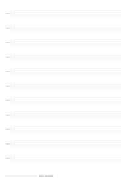

Pick the right paper.
Choose A4 for 210 × 297 mm, or US Letter for 8.5 × 11 inches. Match the PDF and your printer’s loaded paper.
Four-line tablature systems for bass riffs, grooves and fingering studies. Keep the page simple and supply your own tuning, rhythm and performance notes.
Print at Actual size / 100%. Check the 50 mm ruler.
Customize this paper
A4 preview shown. US Letter keeps the specified spacing; the layout adapts to the page.
The screen is a preview.
The printed ruler is your check.
Choose A4 for 210 × 297 mm, or US Letter for 8.5 × 11 inches. Match the PDF and your printer’s loaded paper.
Select Actual size / 100% in your PDF viewer. Turn off “Fit” and “Shrink oversized pages” to preserve the spacing.
Measure the 50 mm line at the bottom of your print. If it is off, check scaling and your printer before using the grid for measurements.
No. The sheet contains four-line systems for four-string bass.
No. The lines are unlabeled so you can write standard or alternate tuning yourself.
Download the size that matches your paper. In your PDF viewer, select Actual size / 100% and turn off Fit or Shrink. Measure the 50 mm calibration ruler after printing.